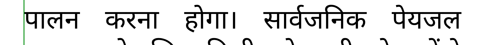
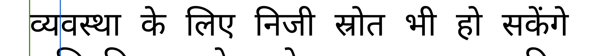
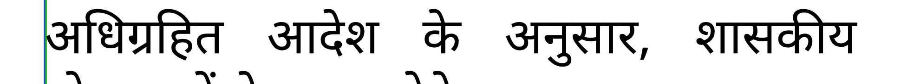

Assumed grid: A3, 12 mm margins, 5 columns, 4 mm gutter, 9 pt body (GG-007).
Each strip is one line from the printed PDF, rendered at 12 px per pt. Three marks:



On line 408 the ink starts on the red mark, the same as on its neighbours. pdf.js has no text item for the first conjunct (व्य), so its first item is "वस्", about 8 pt further in, and the old check took it because it also starts with व. The raster check reads the ink itself, so it does not depend on what pdf.js extracts.
Mutation check (part of the gate): every run prints the page a second time with one line drawn 8 pt to the right. The raster check must read that line as 8 pt off, within 0.1 pt, and every other line within 0.1 pt; otherwise the gate fails. On 2026-10-31 it read 7.991 pt.
Rebuild: node scripts/gg042-visual.mjs.